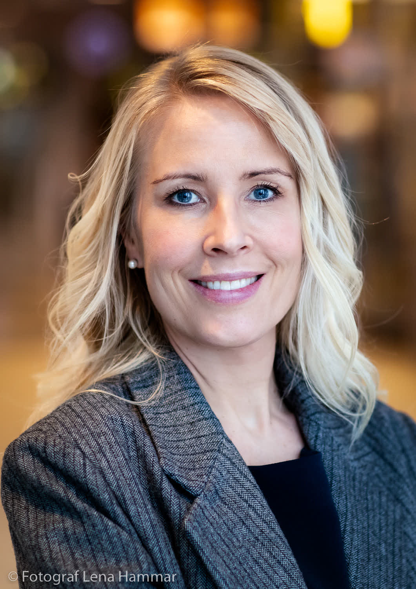
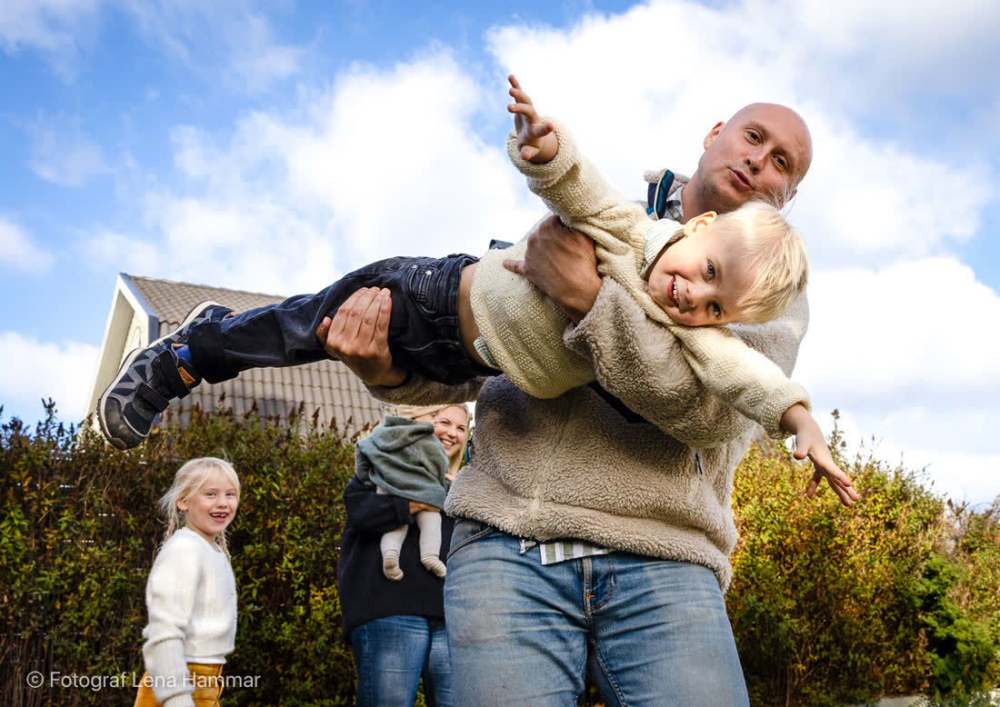
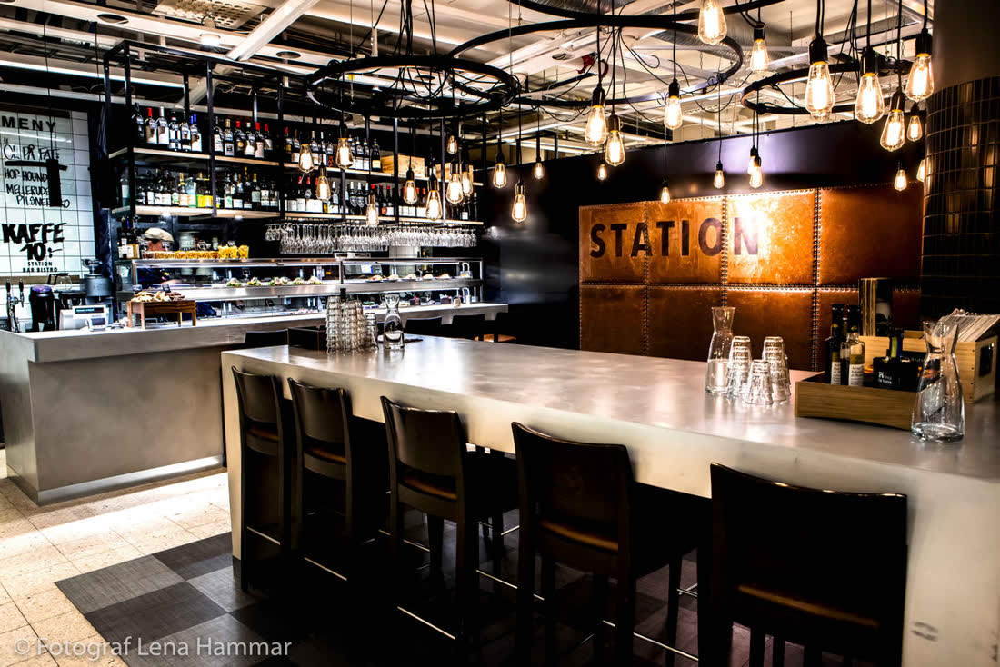
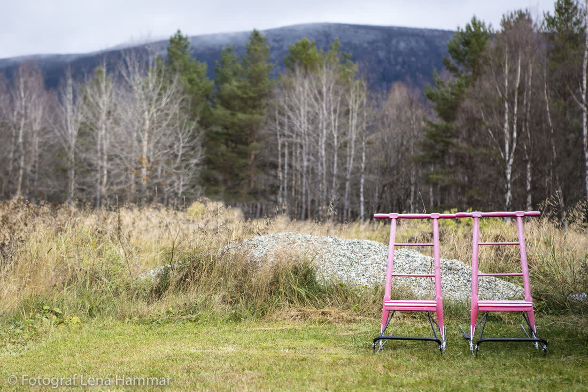
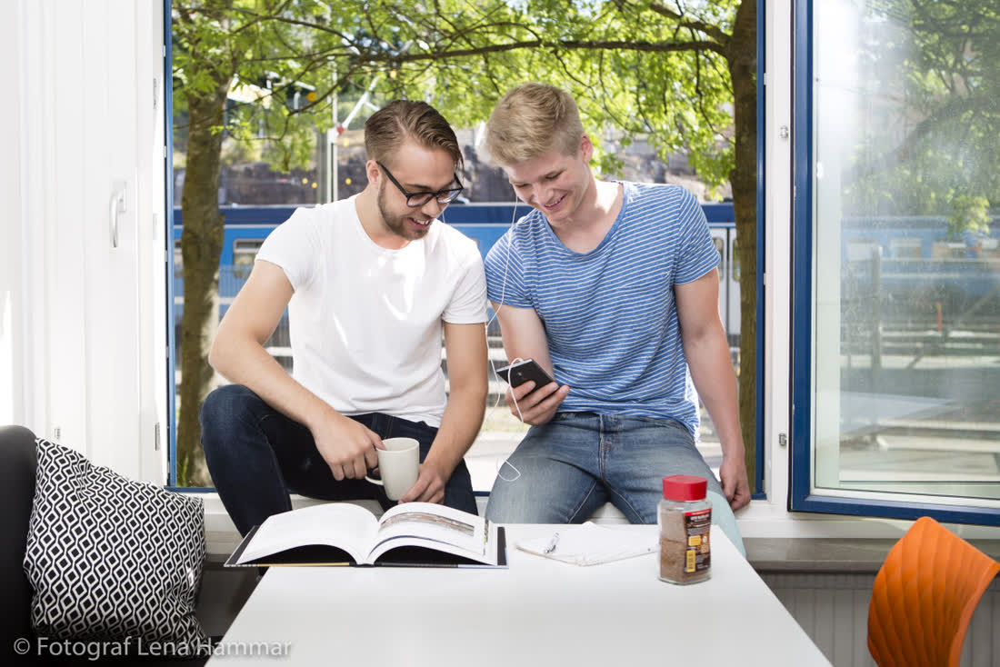
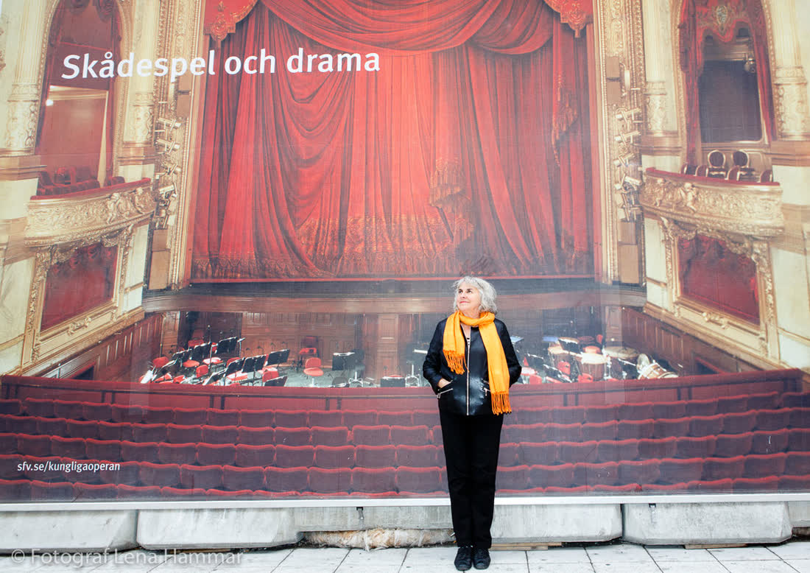

VigselSe bilder
VigselSe bilder
 FestSe bilder
FestSe bilder
 PorträttSe bilder
VigselSe bilder
FestSe bilder
PorträttSe bilder
PorträttSe bilder
VigselSe bilder
FestSe bilder
PorträttSe bilder

Jag fotograferar bröllop i och runt Stockholm sedan 2016. Ungefär 30 par om året, aldrig två samma dag. Jag är den som ligger på golvet under första dansen och som vet var ljuset står i Katarina kyrka klockan 15.
Min regel: ingen ska behöva posera i mer än tio minuter. Resten av dagen tar jag det som händer. Det som händer är nästan alltid bättre.
Utanför jobbet: dålig på padel, bra på tårta.


"Vi har 1 100 bilder och vi gillar typ 1 090 av dem. Resten är på mormor, och det är hennes fel."
Alva & Simon, Djurgården"Han dansade mer än vår toastmaster. Bilderna från dansgolvet är det bästa vi äger."
Ida & Kasper, Fotografiska-terrassen"Ingen stel gruppbild. Bara folk som skrattar på riktigt."
Moa & Leo, Värmdö







| Vigsel | 2 timmar. Ceremoni, gratulationer, porträtt i närheten. 150+ bilder. | 14 900 kr |
| Halvdag | 6 timmar. Från förberedelser till middagen. 450+ bilder. | 29 500 kr |
| Hela dagen | 10 timmar, fram till dansgolvet är varmt. 800+ bilder, galleri inom 3 veckor. | 41 000 kr |
Lördagar maj–september går ofta 12–14 månader innan. Fredagar och vinterbröllop finns oftare kvar.
Hela Sverige ingår i Stockholms län. Utanför: milersättning, och vid längre resor övernattning.
Ni får alla bilder jag tycker är bra, redigerade i full upplösning, i ett onlinegalleri ni kan dela.
Ja. Fika på Södermalm eller video, vad som passar.
Skriv datum och plats så svarar jag inom ett dygn om jag är ledig.
hej@kornellfoto.se · 070-412 88 31